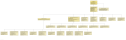

|
|||||||||
| PREV PACKAGE NEXT PACKAGE | FRAMES NO FRAMES | ||||||||
See:
Description
| Interface Summary | |
|---|---|
| DiagramCommand | Abstract command that executes some action on a diagram. |
| Class Summary | |
|---|---|
| AbstractAddDependentClassesCommand | Abstract base class for adding depending classes to diagram. |
| AbstractConnectCommand | Abstract base class for commands that connect existing nodes. |
| AbstractDiagramCommand | Abstract base class for diagram commands. |
| AddClassCommand | Adds a class to a diagram. |
| AddDependentClassesCommand | Adds dependent classes to a diagram. |
| AddExtendedClassesCommand | Adds dependent classes to a diagram. |
| AddExtendingClassesCommand | Adds dependent classes to a diagram. |
| AddFieldClassesCommand | Adds classes to diagram using or used via fields. |
| AddUsedClassesCommand | Adds dependent classes to a diagram. |
| AddUsingClassesCommand | Adds dependent classes to a diagram. |
| ConnectClassesCommand | Adds connections between all class nodes in a diagram. |
| ConnectClassesExtendedCommand | Adds connections between all class nodes in a diagram that extend each other. |
| ConnectClassesFieldCommand | Adds connections between all class nodes in a diagram that use each other via fields. |
| ConnectClassesUsedCommand | Adds connections between all class nodes in a diagram that use each other. |
| ConnectSingleClassCommand | Adds connections between given class node and other class nodes in a diagram. |
| ConnectSingleClassExtendedCommand | Adds connections between given class node and other class nodes in a diagram that are extended by given class. |
| ConnectSingleClassExtendingCommand | Adds connections between given class node and other class nodes in a diagram that are extending given class. |
| ConnectSingleClassFieldCommand | Adds connections between given class node and other class nodes in a diagram that use each other via fields. |
| ConnectSingleClassUsedCommand | Adds connections between given class node and other class nodes in a diagram that are used by given class. |
| ConnectSingleClassUsingCommand | Adds connections between given class node and other class nodes in a diagram that use given class. |
| DiagramCommandFactory | Creates diagram command objects from JDOM elements. |
| RemoveAllCreateEdgesCommand | Removes all "create" edges from a diagram. |
| RemoveAllUsageEdgesCommand | Removes all "usage" edges from a diagram. |
| RemoveClassCommand | Removes a class node from a diagram. |
| RemoveEdgeCommand | Removes an edge from a diagram. |
Provides all classes that implement UML diagram creation steps. UML diagrams are built by diagram creation steps, so that changes to any classes can always be synchronized with a UML diagram. This package contains all classes and interfaces related to these diagram creation step commands.
This static class diagram shows the command-classes used for creating UML-diagrams and their relations: .
|
|||||||||
| PREV PACKAGE NEXT PACKAGE | FRAMES NO FRAMES | ||||||||